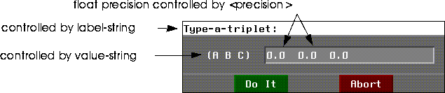

Compared to a language like C, Lisp is a fairly high-level language. As a result, Lisp programmers do not have to be as explicit in Lisp about how certain operations are to be performed. Lisp itself steps in wherever it can to make decisions for you. For example, the following simple Lisp addition function with three integer arguments:
Optimizing Math with Anti-Generic Functions
6
integer.The addition function itself is generic, which means that its' arguments do not have to be of a specific type. However, Lisp must still make internal decisions about the types of the arguments so it can allocate storage space and determine the type of the result. In our example, this was fairly simple, since we provided the function with constants as arguments. Lisp knew ahead of time that these arguments were integers, and it was able to determine that the result of this operation with integers is another integer.
However, suppose you provide arguments of different types, e.g.
(+ 1 2 3.0)
6.0
(+ (+ 1 (+ 2 3)))
(+ 1(+2 (+3 (+ 4 5)
(defun foo (a b c)
(+ a b c))
(+ a b c)
(+ (+ a b) c))
(compile
(defun foo (a b c)
(declare (:explain :types))
(+ a b c)))
;Examining a call to +_2OP with arguments:
; call to +_2OP type (NUMBER * *)
; symeval C type T
; which returns a value of type (NUMBER * *)
;Examining a call to +_2OP with arguments:
1; symeval A type T
1; symeval B type T
2; which returns a value of type (NUMBER * *)
FOO
NIL
NIL
(+ a (+ b c))
1. Use disassemble to view a compiled function in assembly language
(disassemble `foo)
(compile
(defun foo ()
(declare (:explain :types))
(+ 1 2 3)))
(f! (+ (f! (+ (f! a) (f! b))) (f! c)))
(th
(+ (the single-float
(+ (the single-float a)
(the single-float b)))
(the single-float c)))
f+ macro expands the addition operation into nested pairs, and also explicitly types the arguments passed to it. In addition, the first declaration instructs the compiler to return a value of type single-float.
NCL Anti-Generic Functions
Nichimen Common Lisp (NCL) includes a wide array of anti-generic functions intended for use with float, double float, and fixnum arguments. Each of these is exported by the NCL package. They can be used without package specifiers in nearly all situtations.
There are 7 basic groups of anti-generic functions:
Declarations
These forms are shorthand macros for the various type definition forms. For example, the I! macro is equivalent to "The fixnum ...".
| Fixnum | Float | Double Float | Comments |
|---|---|---|---|
I!
|
F!
|
D!
|
All accept single FLOAT args.
|
| Fixnum | Float | Double Float | Comments |
|---|---|---|---|
IPLUSP
|
FPLUSP
|
DPLUSP
|
Equivalent to PLUSP.
|
IMINUSP
|
FMINUSP
|
DMINUSP
|
Equivalent to MINUSP
|
| Fixnum | Float | Double Float | Comments |
|---|---|---|---|
I+
|
F+
|
D+
|
Equivalent to +
|
I-
|
F-
|
D-
|
Equivalent to -
|
I*
|
F*
|
D*
|
Equivalent to *
|
I/
|
F/
|
D/
|
Equivalent to /.
|
Multiple Values Bind Utilities
Use these functions to parse ftriplets and other structures which contain several values:
The following syntax is for multiple-ivalue-bind, but all three share the same general syntax:
(multiple-ivalue-bind vars form &BODY body)
A vector is a single dimensional array. Vectors and lists are very similar. However, the processor time required to access any given component of a list increases with the length of the list, whereas the time required to access a vector component is constant. However, it takes a constant amount of time to add items to the front of a list, while the time required to add elements to an array increases proportionately with the length of the array.
Optimization with Floating Point Vectors
Ftriplets
An ftriplet is a vector with with three floating point elements. Although you may use ftriplets for any purpose, they are typically used to store 3D cartesian coordinates. Regardless of the type of any values you pass to functions which create ftriplets, they are converted into floating-point values.
Creating Ftriplets
Create ftriplets with 3D:MAKE-FTRIPLET!:
(3D:MAKE-FTRIPLET! &OPTIONAL x y z)
For example, to make an ftriplet with 1.0, 2.0, and 3.0:
(3d:make-ftriplet! 1.0 2.0 3.0)
#(1.0 2.0 3.0)
(3d:make-ftriplet! 1.0 2.0)
#(1.0 2.0 0.0)
(3d:make-ftriplet!)
#(0.0 0.0 0.0)
Creating Origin Ftriplets
You can quickly and easily create an ftriplet with x, y, and z values of 0 with 3D:ORIGIN-FTRIPLET:
(3D:ORIGIN-FTRIPLET)
#(0.0 0.0 0.0)
Creating Ftriplets Interactively
You can also use a pop-up menu to create ftriplets. 3D:MENU-GET-FTRIPLET generates a pop-up menu like the one in Figure 12.1

3D:MENU-GET-FTRIPLET has the following form:
(3d:menu-get-ftriplet initial-value &OPTIONAL
label-string value-string do-it-method precision relative?))
:, e.g.
Reading Ftriplets
Because ftriplets are arrays, all of the standard Lisp functions for accessing arrays (such as aref) will work with ftriplets. However, the NGCL provides some handy tools for returning ftriplets and for returning individual elements of ftriplets.
Returning Parts of Ftriplets
You can return the x, y, or z elements of an ftriplet singly with one of three similar macros:
3D:FTRIPLET-X ftriplet - returns the first element of the array
3D:FTRIPLET-Y ftriplet - returns the second element of the array
3D:FTRIPLET-Z ftriplet - returns the third element of the array
(3D:FTRIPLET-X (3d:make-ftriplet! 1.0 2.0 3.0))
Binding Multiple Values
You can bind the components of ftriplets to variables using the macro 3D:FTRIPLET-VALUES-BIND.
(ftriplet-values-bind (x y z) (make-ftriplet! 1.0 2.0 3.0)
(format t "X=~d~%" x)
(format t "Y=~d~%" y)
(format t "Z=~d~%" z)
)
Modifying Ftriplets
Several functions allow for the modification of ftriplets after they are initialized. You can scale, displace, and replace values in ftriplets. These functions are particularly useful when you are manipulating coordinate values during object translations and transformations.
Replacing Ftriplet Elements
Let's assume we've defined an ftriplet with x, y, and z values of 1.0, 2.0, and 3.0, and bound it to ftvar.
(setf ftvar (3d:make-ftriplet! 1.0 2.0 3.0))
#(1.0 2.0 3.0)
(setf (ftriplet-z ftvar) 6.6)
#(1.0 2.0 6.6)
3D:FILL-FTRIPLET function to manipulate individual elements of ftriplets. For example, the following form changes the y value of ftvar (as first defined above) to 6.6:
(3D:FILL-FTRIPLET ftvar nil 6.6 nil)
#(1.0 6.6 3.0)
Scaling Ftriplet Values
3D:SCALE-FTRIPLET applies a scaling factor to each element of an ftriplet, and returns the result in a new ftriplet. You can apply a single scaling factor to one or all elements of the ftriplet. You can also apply different scaling factors to each element of the array. 3D:SCALE-FTRIPLET has the following basic form:
(3d:scale-ftriplet
triplet-var (x-factor &OPTIONAL y-factor z-factor)
(&OPTIONAL into-triplet-var)
)
(3d:scale-ftriplet ftvar (2))
#(2.0 4.0 6.0)
scale-ftriplet macro, the first factor will be applied to the x-element of the ftriplet, and the second factor will be applied to the y and z elements of the ftriplet. For example, given ftvar as defined above:
(3d:scale-ftriplet ftvar (2 4))
#(2.0 8.0 12.0)
ftvar as defined above:
(3d:scale-ftriplet ftvar (2 3 4))
#(2.0 6.0 12.0)
ftvar, but stores the result of the scale in another ftriplet, nuftvar:
(3d:scale-ftriplet ftvar (2) nuftvar)
#(2.0 4.0 6.0)
into-triplet-var must be bound to a defined ftriplet, or the macro returns an error. Of course, you could create into-triplet-var within the scale-ftriplet form, but this is cumbersome.
Moving Ftriplet Values
You can apply displacement to ftriplet values in much the same way that you scale them. You can use 3D:MOVE-FTRIPLET to apply a displacement to the elements of an ftriplet:
(3D:MOVE-FTRIPLET ftriplet-var (x-displacement &OPTIONAL
y-displacement z-displacement) &OPTIONAL into-triplet-var)
ftvar as first defined above, the following form adds 10.0 to all elements of the ftriplet:
(3d:move-ftriplet ftvar (10.0 10.0 10.0))
#(11.0 12.0 13.0)
move-ftriplet, or the macro returns an error.
Copyright © 1996, Nichimen Graphics Corporation. All rights reserved.